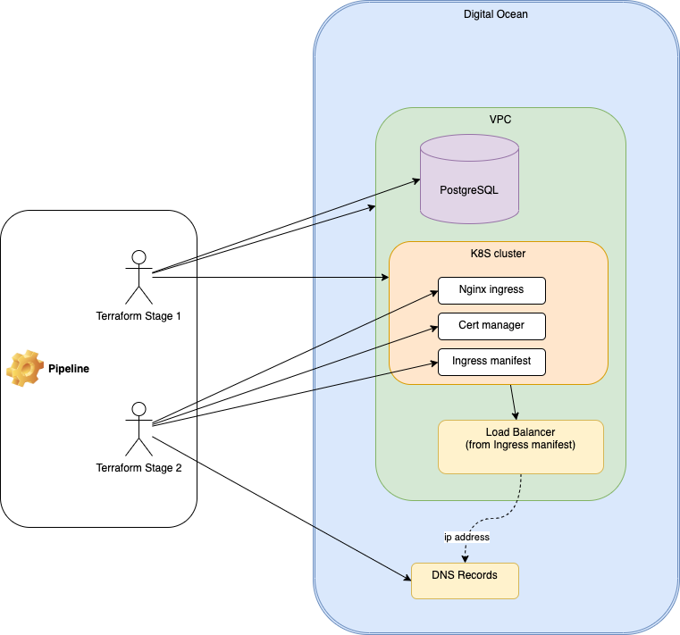
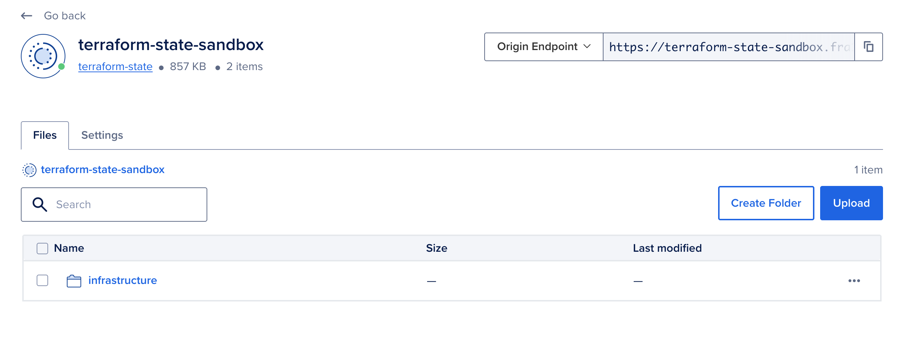

Terraform and DigitalOcean: Automating Infrastructure and Catching the Hidden Load Balancer
Introduction:
Date: 17 May 2023
In this article, I will demonstrate the process of provisioning various components of infrastructure, including Projects, Virtual Private Clouds (VPCs), Kubernetes clusters, Load Balancers, and DNS Records. Additionally, I will outline the steps to configure Kubernetes with ingress and cert-manager, all within a single pipeline.
For this purpose, I have chosen DigitalOcean as the cloud provider due to its cost-effectiveness in comparison to leading providers like AWS, GCP, and Azure. To facilitate the infrastructure provisioning, I will be utilizing Terraform, a powerful infrastructure as code tool. Unfortunately, I won't be able to incorporate Terragrunt into this setup, as I encountered difficulties in configuring it with DigitalOcean Bucket (Space).
Project structure:
The core of my project involves defining a live infrastructure along with several modules. The infrastructure definition comprises two distinct stages, which can be visualized through the provided diagram.
You can find all of my code in my GitHub repository: https://github.com/andygolubev/terraform-digital-ocean
Initially, I attempted to handle both stages within a single script. However, during the implementation, I encountered a limitation with Terraform. Specifically, I discovered that Terraform's integration with the DigitalOcean provider did not allow for the creation and configuration of Kubernetes using the HashiCorp Kubernetes provider within the same script.
To address this challenge and ensure a smooth deployment process, I decided to split the infrastructure definition into two stages:
Stage 1: Infrastructure Provisioning (VPC, Kubernetes, PostgreSQL, Install Nginx and Cert manager)
Stage 2: Kubernetes Configuration, DNS records setup
By separating the infrastructure provisioning and Kubernetes configuration into distinct stages, we can overcome the limitations imposed by the integration challenges mentioned earlier. This approach allows for granular control and flexibility when deploying and managing infrastructure and Kubernetes resources.
Furthermore, this division of stages enables better modularization and reusability, as each stage can be version-controlled, tested, and deployed independently. This not only simplifies the maintenance and troubleshooting process but also promotes scalability and agility when making changes or expanding the infrastructure in the future.
Overall, by navigating around the constraints and adopting a two-stage approach, we can effectively define and deploy our live infrastructure while integrating Kubernetes seamlessly into the process, ensuring a reliable and scalable environment for our applications.
This is my folders structure:

By separating the infrastructure provisioning and Kubernetes configuration into distinct stages, we can overcome the limitations imposed by the integration challenges mentioned earlier. This approach allows for granular control and flexibility when deploying and managing infrastructure and Kubernetes resources.
Furthermore, this division of stages enables better modularization and reusability, as each stage can be version-controlled, tested, and deployed independently. This not only simplifies the maintenance and troubleshooting process but also promotes scalability and agility when making changes or expanding the infrastructure in the future.
Overall, by navigating around the constraints and adopting a two-stage approach, we can effectively define and deploy our live infrastructure while integrating Kubernetes seamlessly into the process, ensuring a reliable and scalable environment for our applications.
This is my folders structure:
➜ terraform-digital-ocean git:(main) tree .
.
├── Infrastructure
│ └── digitalocean
│ ├── infrastructure-live
│ │ └── test-v1
│ │ ├── stage1
│ │ │ ├── main-stage1.tf
│ │ │ └── outputs.tf
│ │ └── stage2
│ │ ├── main-stage2.tf
│ │ └── outputs.tf
│ └── infrastructure-modules
│ ├── kubernetes-config
│ │ └── v1.0
│ │ ├── 0-versions.tf
│ │ ├── 1-save-kubeconfig.tf
│ │ ├── 2-cluster-issuer.tf
│ │ ├── 3-ingress-demo.tf
│ │ ├── 4-services-good-afternoon.tf
│ │ ├── 4-services-good-evening.tf
│ │ ├── 4-services-good-morning.tf
│ │ ├── 5-service-pagenotfound.tf
│ │ ├── 6-load-balancer.tf
│ │ ├── 7-records.tf
│ │ ├── 8-variables.tf
│ │ └── 9-outputs.tf
│ ├── kubernetes-provision
│ │ └── v1.0
│ │ ├── 0-versions.tf
│ │ ├── 1-kubernetes.tf
│ │ ├── 2-save-kubeconfig.tf
│ │ ├── 3-ingress-and-cert-manager.tf
│ │ ├── 4-registry-access.tf
│ │ ├── 5-variables.tf
│ │ └── 6-outputs.tf
│ ├── postgresql
│ │ └── v1.0
│ │ ├── 0-versions.tf
│ │ ├── 1-postgres.tf
│ │ ├── 2-variables.tf
│ │ └── 3-outputs.tf
│ └── vpc
│ └── v1.0
│ ├── 0-versions.tf
│ ├── 1-vpc.tf
│ ├── 2-variables.tf
│ └── 3-outputs.tf
├── LICENSE
└── README.md
Terraform backend setup:
Prior to executing my pipeline, I have created a private bucket in DigitalOcean for storing terraform states.

Stage 1. Provision the infrastructure
During this stage, I utilize my "main-stage1.tf" file to declare the necessary values for infrastructure provisioning. Additionally, I ensure proper management of dependencies between modules to guarantee a smooth and coherent deployment process.
...
resource "digitalocean_project" "this" {
name = "infra-demo-v1"
...
}
module "vpc" {
source = "../../../infrastructure-modules/vpc/v1.0"
vpc_name = "vpc-test"
...
}
module "kubernetes-provision" {
source = "../../../infrastructure-modules/kubernetes-provision/v1.0"
...
k8s_cluster_name = "demo-cluster-test-v1" #Edit
vpc_id = module.vpc.vpc_id
...
k8s_embedded_pool_size = "s-4vcpu-8gb"
k8s_embedded_pool_nodes_count = 1
# Type "true" if you want this pool of nodes
pool_1_enabled = true
k8s_pool_1_size = "s-4vcpu-8gb"
k8s_pool_1_nodes_count = 1
...
depends_on = [ module.vpc, digitalocean_project.this,]
}
module "postgresql" {
source = "../../../infrastructure-modules/postgresql/v1.0"
...
postgre_enabled = true
posgre_cluster_name = "postgresql-demo-test-v1"
...
depends_on = [ module.vpc, digitalocean_project.this,]
}
Outputs:
k8s_cluster_id = "ba4854df-c6de-4deb-8385-77014b491454"
k8s_cluster_name = "demo-cluster-test-v1"
k8s_cluster_urn = "do:kubernetes:ba4854df-c6de-4deb-8385-77014b491454"
Stage 2. Configure the Kubernetes cluster and DNS
In Stage 2 of my pipeline, I use a combination of Kubernetes manifests, local command execution, and the creation of DigitalOcean resources to achieve the desired configuration and setup. You can see it in my "kubernetes-config" terraform module: main-stage2.tf
The "main-stage2.tf" file includes all the essential configurations for Stage 2.
The complete content of the file: main-stage2.tf
...
module "kubernetes-config" {
source = "../../../infrastructure-modules/kubernetes-config/v1.0"
digital_ocean_api_token_for_k8s_config = var.digital_ocean_api_token
k8s_config_cluster_name = var.k8s_cluster_name
domain = "kuber.work"
service1-subdomain = "service-1-test-morning"
service2-subdomain = "service-2-test-afternoon"
service3-subdomain = "service-3-test-evening"
lb-workaround-subdomain = "lb-workaround-test"
service1-service = "goodmorning"
service2-service = "goodafternoon"
service3-service = "goodevening"
cluster-issuer = "letsencrypt-prod" # letsencrypt-prod or letsencrypt-staging
ssl-redirect = "false" # To accommodate the requirement for the service to respond on HTTP, a temporary value is assigned for certificate issuing.
}
resource "local_file" "get_load_balancer_script" {
content = <<-EOF
#!/bin/bash
doctl kubernetes cluster list-associated-resources $1 -o json | jq '{ load_balancer_id: .load_balancers[0].id, load_balancer_name: .load_balancers[0].name }'
EOF
filename = "/tmp/get_load_balancer_id.sh"
depends_on = [ kubernetes_ingress_v1.demo-ingress, kubernetes_service_v1.ingress-nginx-controller, ]
}
data "external" "load_balancer_details" {
program = ["${local_file.get_load_balancer_script.filename}", "${var.k8s_config_cluster_name}"]
depends_on = [ local_file.get_load_balancer_script, ]
}
data "digitalocean_loadbalancer" "this" {
id = data.external.load_balancer_details.result.load_balancer_id
depends_on = [ local_file.get_load_balancer_script, ]
}
data "digitalocean_domain" "this" {
name = var.domain
}
resource "digitalocean_record" "service1" {
domain = data.digitalocean_domain.this.id
type = "A"
name = var.service1-subdomain
value = data.digitalocean_loadbalancer.this.ip
depends_on = [ local_file.get_load_balancer_script, ]
}
...
➜ ~ curl https://service-1-test-morning.kuber.work -v
* Trying 146.190.178.50:443...
* Connected to service-1-test-morning.kuber.work
...
* Server certificate:
* subject: CN=service-1-test-morning.kuber.work
* start date: May 17 10:20:20 2023 GMT
* expire date: Aug 15 10:20:19 2023 GMT
* subjectAltName: host "service-1-test-morning.kuber.work" matched cert's "service-1-test-morning.kuber.work"
* issuer: C=US; O=Let's Encrypt; CN=R3
* SSL certificate verify ok.
...
Good Morning!
Automate the process using GitHub actions
For the automation I use two separate workflows:
- Provision the infrastructure
- Destroy the infrastructure (Manual run)
Workflow for the infrastructure provision:
name: 1-Provision-infrastructure
on:
push:
branches: [ "main" ]
pull_request:
branches: [ "main" ]
env:
PATH_STAGE_1: "./Infrastructure/digitalocean/infrastructure-live/test-v1/stage1/"
PATH_STAGE_2: "./Infrastructure/digitalocean/infrastructure-live/test-v1/stage2/"
jobs:
provision:
name: Provision the infrastructure in Digital Ocean and configure Kubernetes
runs-on: ubuntu-latest
steps:
- name: Install doctl
uses: digitalocean/action-doctl@v2
with:
token: ${{ secrets.DO_API_TOKEN }}
- name: Checkout
uses: actions/checkout@v3
- name: Provision the infrastructure
env:
DO_API_TOKEN: ${{secrets.DO_API_TOKEN }}
DO_BUCKET_ACCESS_KEY: ${{ secrets.DO_BUCKET_ACCESS_KEY }}
DO_BUCKET_SECRET_KEY: ${{ secrets.DO_BUCKET_SECRET_KEY }}
run: |
terraform -chdir=$PATH_STAGE_1 init -var="digital_ocean_api_token=$DO_API_TOKEN" -backend-config="access_key=$DO_BUCKET_ACCESS_KEY" -backend-config="secret_key=$DO_BUCKET_SECRET_KEY"
terraform -chdir=$PATH_STAGE_1 plan -var="digital_ocean_api_token=$DO_API_TOKEN"
terraform -chdir=$PATH_STAGE_1 apply -var="digital_ocean_api_token=$DO_API_TOKEN" --auto-approve
terraform -chdir=$PATH_STAGE_2 init -var="digital_ocean_api_token=$DO_API_TOKEN" -backend-config="access_key=$DO_BUCKET_ACCESS_KEY" -backend-config="secret_key=$DO_BUCKET_SECRET_KEY"
terraform -chdir=$PATH_STAGE_2 plan -var="digital_ocean_api_token=$DO_API_TOKEN" -var="k8s_cluster_name=$(cd $PATH_STAGE_1 && terraform output -raw k8s_cluster_name)"
terraform -chdir=$PATH_STAGE_2 apply -var="digital_ocean_api_token=$DO_API_TOKEN" --auto-approve -var="k8s_cluster_name=$(cd $PATH_STAGE_1 && terraform output -raw k8s_cluster_name)"
name: 2-Destroy-infrastructure
on:
workflow_dispatch:
env:
PATH_STAGE_1: "./Infrastructure/digitalocean/infrastructure-live/test-v1/stage1/"
PATH_STAGE_2: "./Infrastructure/digitalocean/infrastructure-live/test-v1/stage2/"
jobs:
destroy:
name: Destroy the infrastructure in Digital Ocean
runs-on: ubuntu-latest
steps:
- name: Install doctl
uses: digitalocean/action-doctl@v2
with:
token: ${{ secrets.DO_API_TOKEN }}
- name: Checkout
uses: actions/checkout@v3
- name: Destroy the infrastructure
env:
DO_API_TOKEN: ${{ secrets.DO_API_TOKEN }}
DO_BUCKET_ACCESS_KEY: ${{ secrets.DO_BUCKET_ACCESS_KEY }}
DO_BUCKET_SECRET_KEY: ${{ secrets.DO_BUCKET_SECRET_KEY }}
run: |
terraform -chdir=$PATH_STAGE_1 init -var="digital_ocean_api_token=$DO_API_TOKEN" -backend-config="access_key=$DO_BUCKET_ACCESS_KEY" -backend-config="secret_key=$DO_BUCKET_SECRET_KEY"
doctl auth init --access-token $DO_API_TOKEN
doctl kubernetes cluster kubeconfig save $(terraform -chdir=$PATH_STAGE_1 output -raw k8s_cluster_name) || true
terraform -chdir=$PATH_STAGE_2 init -var="digital_ocean_api_token=$DO_API_TOKEN" -backend-config="access_key=$DO_BUCKET_ACCESS_KEY" -backend-config="secret_key=$DO_BUCKET_SECRET_KEY" || true
terraform -chdir=$PATH_STAGE_2 apply -destroy -var="digital_ocean_api_token=$DO_API_TOKEN" --auto-approve -var="k8s_cluster_name=$(cd $PATH_STAGE_1 && terraform output -raw k8s_cluster_name)" || true
terraform -chdir=$PATH_STAGE_1 apply -destroy -var="digital_ocean_api_token=$DO_API_TOKEN" --auto-approve
terraform -chdir=$PATH_STAGE_2 apply -destroy --auto-approve || true
Conclusion:
In this article, I have demonstrated the process of provisioning various components of infrastructure using Terraform on DigitalOcean. By adopting a two-stage approach, I have overcome the limitations of the Terraform and the DigitalOcean providers.
You can find all of my code in my GitHub repository: https://github.com/andygolubev/terraform-digital-ocean
Feel free to connect with me on LinkedIn: https://www.linkedin.com/in/andy-golubev/